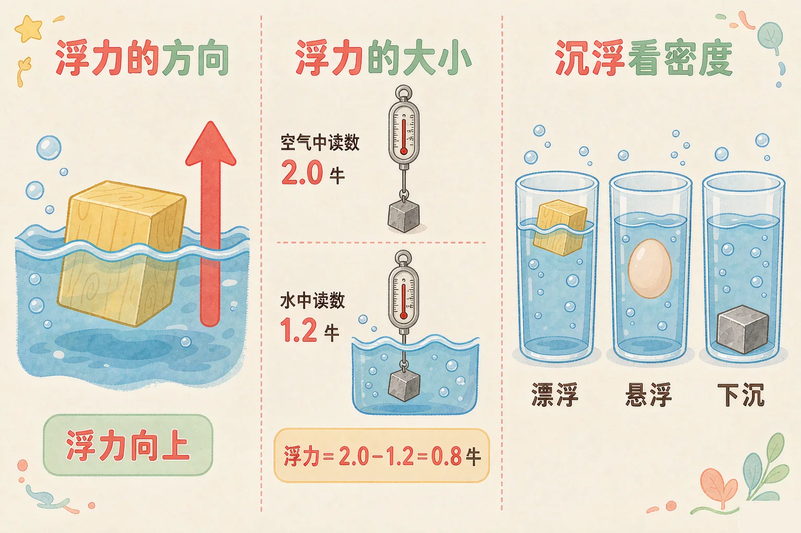
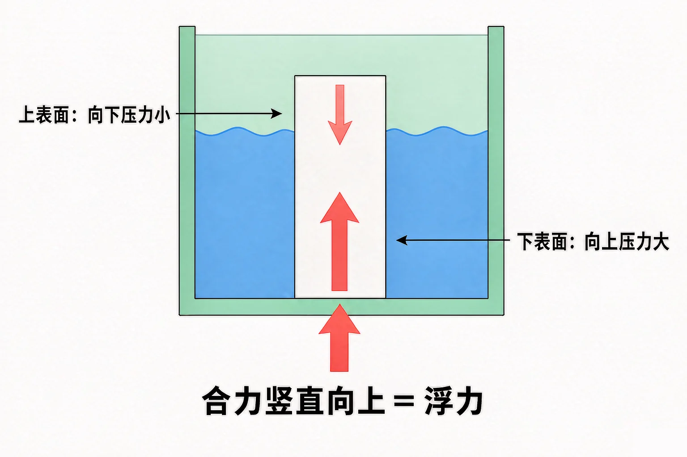
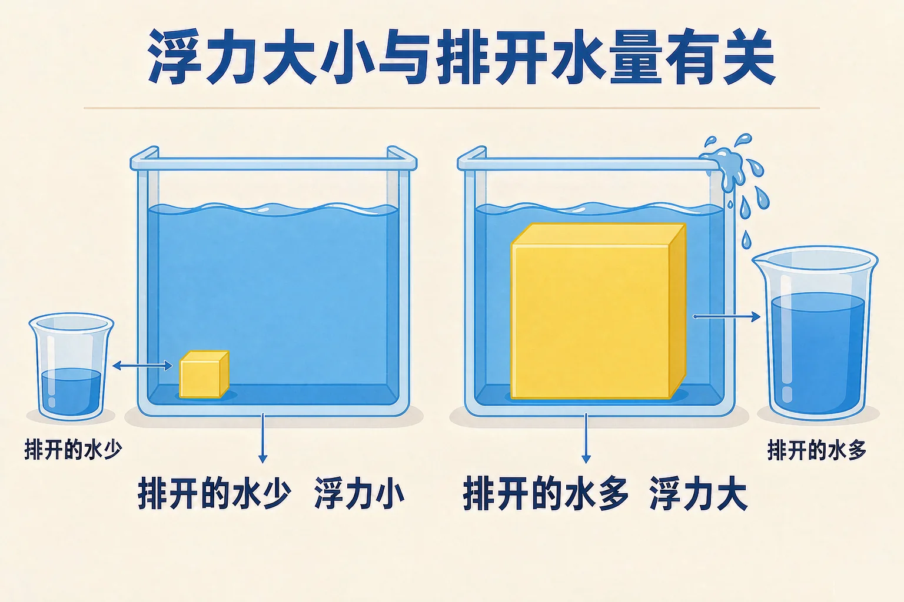

小学五年级 · 物质科学 · 力
钢铁造的大轮船为什么能浮着，轻轻一颗石子却立刻沉底？

选一个你真正好奇的问题，后面的实验都会围着它转。
选择或输入后，这节课会围绕你的问题展开。
先凭直觉选一个，选完立刻看到解释——错了也没关系，正好知道要重点听哪里。
1. 把一颗石子和一块同样大小的木头放进水里，谁会浮起来？
木头比水松散，石子比水密实，所以木头浮、石子沉。这说明沉浮和材料本身有关。
2. 一个物体完全浸没在水里，它受到的浮力方向是：
浮力是液体从下往上托物体的力，方向永远竖直向上。
3. 船是钢铁造的，按理说钢铁会沉，可大轮船为什么能浮着？
这个问题先记在心里，等下我们做实验来验证：排开的水越多，得到的浮力越大。
把木块按进水里，一松手它就弹上来——因为水在向上托它。这个向上的托力，就叫浮力。
浮力的方向
永远竖直向上，与重力方向相反。物体往哪边沉，浮力都朝上。
谁会产生浮力
水会、盐水会、油会，连空气也会。浸在什么流体里，就受到那个流体给的浮力。

🔍 深层理解 换个角度再看一遍这件事，看看能不能说出背后的原理。
看见它：水里的每一块石头、每一根木条，身上都贴着一个向上的箭头，大小不同，方向永远朝上。
解释它：为什么是向上而不是向下？因为物体下表面浸得更深，水对它的向上压力大于上表面对它的向下压力，两个压力一抵，就剩下一股向上的力。
迁移它：空气也是流体，所以热气球、降落伞同样受到空气给的浮力——这就是热气球能带着人升空的原因。
选一个物体，先看清它在空气中的读数，再把它放进水里，看看读数变小了多少。
同一个物体，浸进水里的部分越多，弹簧测力计的读数就变得越小——说明浮力变大了。

先选液体，再选物体的材料，看看它浮、悬浮还是沉到底，然后读一读下面的解释。
题目：体积都是 100 立方厘米的铝块和木块，一起放进水里，会发生什么？请说明理由。
说"因为铝块重所以下沉"是不准确的。体积相同的木块和铝块，铝块确实更重；但真正决定沉浮的是密度——换成一大块泡沫，即使比小铝块重得多，它依然能浮起来。
先凭直觉选一个，选完立刻看到解释——错了也没关系，正好知道要重点听哪里。
1. 下面哪句话是正确的？
浮力只看排开了多少液体，与物体自身轻重没有直接关系；沉在水底的石头同样受到浮力。错因提醒：把浮力和重力搞混，是这一课最高频的常见错误。
2. 把一块木块从水中往上提，让它排开的水变少，它受到的浮力会：
排开的液体变少，浮力随之变小。这正是弹簧测力计读数会变化的原理。错因提醒：选不变的同学，多半是误认为浮力由物体的重量决定。请回到那句话：浮力等于排开液体受到的重力。
3. 把同一个鸡蛋放进清水里它沉底，放进浓盐水里它浮起来。原因是：
鸡蛋没有变，变的是液体。液体密度越大，同样体积排开的液体越重，浮力越大。错因提醒：容易误认为物体在盐水里变轻了——物体的重并没有改变，改变的是它获得的浮力。
同一张铝箔，形状不同，能装的东西完全不同。先试一试，再总结原因。
把它们写下来，说给同桌听：
铝箔的重量改变了没有？排开的水量改变了没有？浮力改变了没有？为什么折成船就能装货？
先凭直觉选一个，选完立刻看到解释——错了也没关系，正好知道要重点听哪里。
1. 潜水艇要下潜时，会往水舱里灌海水。灌水之后它下沉，是因为：
潜水艇体积不变，所以浮力基本不变；灌水让它变重，重力大于浮力就下沉。它靠改变自身重力实现上浮下潜。
2. 一株新鲜的黄瓜放在水里会浮着，切成小块后更容易沉。最合理的解释是：
沉的依据是密度。改变的是物体的密实程度，不是水的性质。
3. 用弹簧测力计测出某物体在空气中重 4.0 牛，浸没在水中时读数为 3.0 牛，它受到的浮力是：
浮力等于两次读数的差：4.0 − 3.0 = 1.0 牛。
回到开头的大轮船：钢铁确实比水密实，但船体是空心的，整艘船的平均密度比水小，还排开了巨量的水，得到的浮力足以托起全部重量——所以它浮着。
给别人讲一遍：请用"浮力、排开的水、密度"这三个词，说清楚木块为什么能浮，石子为什么会沉。
三层练习，做完第一、二层就算通关；第三层留给愿意继续探索的同学。
⭐ 基础巩固（必做）
⭐⭐ 能力应用（必做）
⭐⭐⭐ 迁移挑战（选做）
左边是学它之前要先会的，右边是学会之后可以继续探索的，下面是同一领域的伙伴知识。